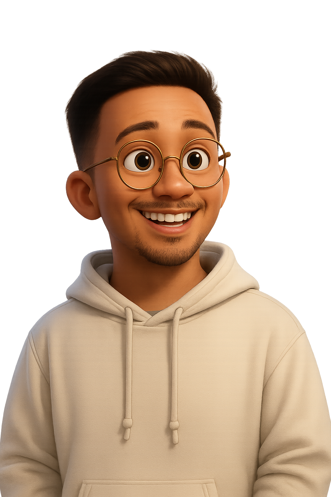

About Me
Discover.
Learn.
Enjoy.
Aspiring computer engineer on a journey to discover, learn, and enjoy every step of the way. I'm KEVIN — a curious, creative, and motivated learner passionate about building meaningful digital experiences. With a background in education and a deepening love for software development, I find joy in exploring new technologies and turning ideas into reality. Whether I’m coding, singing, traveling, or diving into languages — spoken or programming — I approach each moment with curiosity, purpose, and the drive to grow.